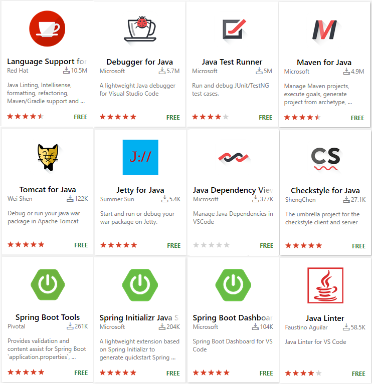
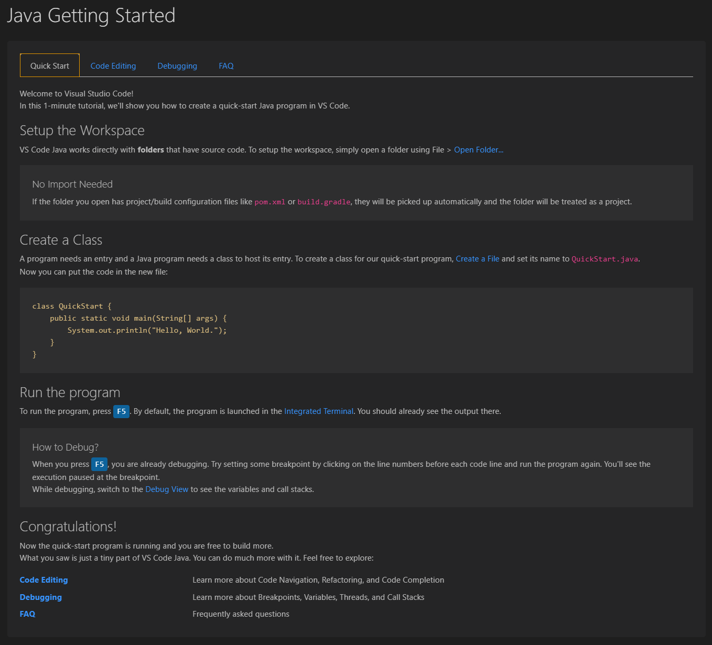

Java in Visual Studio Code
Support for Java in Visual Studio Code is provided through a wide range of extensions. Combined with the power of core VS Code, these extensions give you a lightweight and performant code editor that also supports many of the most common Java development techniques.
This article will give you an overview of different capabilities of Visual Studio Code for Java developers. For a quick walkthrough of editing, running, and debugging a Java program with Visual Studio Code, use the button below.
Overview
VS Code provides essential language features such as code completion, refactoring, linting, formatting, and code snippets along with convenient debugging and unit test support. VS Code also integrates with tooling and frameworks such as Maven, Tomcat, Jetty, and Spring Boot. Leveraging the power of Visual Studio Code, Java developers get an excellent tool for both quick code editing and also the full debugging and testing cycle. It's a great choice for your Java work if you're looking for a tool which:
- Is fast, lightweight, free, and open source.
- Supports many other languages, not just Java.
- Helps start your Java journey without installing and learning a complex IDE.
- Provides great microservices support including popular frameworks, container tooling, and cloud integration.
- Offers team-based collaboration features such as Visual Studio Live Share.
- Improves your productivity through IntelliSense and other code-aware editing features.
Install Visual Studio Code for Java
To help you set up quickly, we recommend you use the Coding Pack for Java, which is the bundle of VS Code, the Java Development Kit (JDK), and a collection of suggested extensions by Microsoft. The Coding Pack can also be used to fix an existing development environment.
Install the Coding Pack for Java - Windows
Install the Coding Pack for Java - macOS
Note: The Coding Pack for Java is only available for Windows and macOS. For other operating systems, you will need to manually install a JDK, VS Code, and Java extensions.
If you have already installed VS Code and want to add Java support to it, we recommend to use Java Extension Pack, a collection of extensions suggested by Microsoft:
- Language Support for Java(TM) by Red Hat
- Debugger for Java
- Java Test Runner
- Maven for Java
- Project Manager for Java
- Visual Studio IntelliCode
Install the Java Extension Pack
Alternatively, you can add Java language support to VS Code by installing the popular Java extensions by yourself.
Download VS Code - If you haven't downloaded VS Code yet, quickly install for your platform (Windows, macOS, Linux).
There are also other popular Java extensions you can pick for your own needs, including:
- Spring Boot Tools
- Spring Initializr Java Support
- Spring Boot Dashboard
- Tomcat
- Jetty
- Community Server Connectors
- Server Connector
- Extension Pack for MicroProfile
- CheckStyle
- SonarLint
Thanks to the great Java community around VS Code, the list doesn't end there. You can search for more Java extensions easily within VS Code:
- Go to the Extensions view (
kb(workbench.view.extensions)). - Filter the extensions list by typing "java".

This document describes some of the key features included in those Java extensions.
Getting started
NOTE: If you are using VS Code on Windows and want to take advantage of the Windows Subsystem for Linux, see Developing in WSL.
Before you start, you must have the Java SE Development Kit (JDK) on your local environment. To run the VS Code for Java extension, Java SE 11 or above version is required; for projects, VS Code for Java supports projects with version 1.5 or above. For how to configure, refer to Configure JDK.
For developers new to Java or new to VS Code, we provide a Getting Started experience. Once you've installed the Java Extension Pack, you can open the Getting Started experience from within VS Code with the Java: Getting Started command from the Command Palette. Open the Command Palette (kb(workbench.action.showCommands)) and type "Java: Getting Started".

Working with Java source files
You can use VS Code to read, write, run, and debug Java source file(s) without creating a project. VS Code for Java supports two modes, lightweight and standard. Lightweight mode is ideal for scenarios that only deal with source file(s). If you want to work with a full scale project, standard mode will be required. You can easily switch from lightweight mode to standard mode, when needed. To learn more, see Lightweight Mode.
Working with Java project
There are three things you must understand to work with Java in VS Code:
- How does VS Code handle Workspaces?
- How does VS Code handle Java?
- How does VS Code handle Workspaces that contain Java?
VS Code Workspaces
In Visual Studio Code, a "Workspace" means a collection of one or more filesystem folders (and their children) and all of the VS Code configurations that take effect when that "Workspace" is open in VS Code. There are two kinds of "Workspaces" in VS Code, "folder workspaces" and "multi-root workspaces".
A "folder workspace" is presented by VS Code when you open a filesystem folder (directory) in VS Code.
A "multi-root workspace" can refer to multiple folders (directories) from disparate parts of the file system and VS Code displays the contents of the folder(s) of the workspace together in the File Explorer. To learn more, see Multi-root Workspaces.
Java project in VS Code
In contrast to IDEs such as IntelliJ IDEA, NetBeans, or Eclipse, the concept of a "Java project" is provided entirely by extensions, and is not a core concept in the base VS Code. When working with "Java projects" in VS Code, you must have the necessary extensions installed to work with those project files.
For example, Maven, Eclipse, and Gradle Java projects are supported through Language Support for Java(TM) by Red Hat, by utilizing M2Eclipse, which provides Maven support, and Buildship, which provides Gradle support through the Eclipse JDT Language Server.
With Maven for Java, you can generate projects from Maven Archetypes, browse through all the Maven projects within your workspace, and execute Maven goals easily from an embedded explorer. Projects can also be created and managed with the Project Manager for Java extension.
Visual Studio Code also supports working with standalone Java files outside of a Java project, described in the Java Tutorial with VS Code.
VS Code Workspaces that contain Java project
Assuming the necessary Java extensions are installed, opening a VS Code workspace that contains Java artifacts will cause those extensions to understand those artifacts and present options for working with them.
More details about Java project support can be found in Java Project Management in Visual Studio Code and Build Tools.
Editing
Code Navigation
Java in Visual Studio Code also supports source code navigation features such as search for symbol, Peek Definition, and Go to Definition. The Spring Boot Tools extension provides enhanced navigation and code completion support for Spring Boot projects.
One of the key advantages of VS Code is speed. When you open your Java source file or folder, within a few seconds, with the help of Lightweight Mode, you will be able to navigate your code base with Outline view as well as commands such as Go to Definition and Go to Reference. This is especially useful when you open a project for the first time.
Code Completion
IntelliSense is a general term for language features, including intelligent code completion (in-context method and variable suggestions) across all your files and for built-in and third-party modules. VS Code supports code completion and IntelliSense for Java through Language Support for Java(TM) by Red Hat. It also provides AI-assisted IntelliSense called IntelliCode by putting what you're most likely to use at the top of your completion list.
See also in Java Code Navigation and Editing. VS Code also supports a range of Refactoring and Linting features.
Debugging
Debugger for Java is a lightweight Java Debugger based on Java Debug Server. It works with Language Support for Java by Red Hat to allow users to debug Java code within Visual Studio Code.
Starting a debugging session is easy, click on the Run|Debug button available at the CodeLens of your main() function, or press kb(workbench.action.debug.start). The debugger will automatically generate the proper configuration for you.
Although it's lightweight, the Java debugger supports advanced features such as expression evaluation, conditional breakpoints, and hot code replacement. For more debugging related information, visit Java Debugging.
Testing
With the support from the Java Test Runner extension, you can easily run, debug, and manage your JUnit and TestNG test cases.
For more about testing, read Testing Java.
Spring Boot, Tomcat, and Jetty
To further improve your Java productivity in VS Code, there are extensions for most popular frameworks and tools such as Spring Boot, Tomcat, and Jetty created by the community.
The Tomcat extension includes an explorer to easily navigate and manage your Tomcat servers. You can create, start, debug, stop, and rename your Tomcat server with the extension.
See Application Servers to learn more about support for Tomcat and Jetty as well as other application servers with VS Code.
Spring Boot support is provided by Pivotal. There are also Spring Initializr Java Support and Spring Boot Dashboard extensions available from Microsoft to further improve your experience with Spring Boot in Visual Studio Code.
See Spring Boot with VS Code to learn more about Spring Boot support with VS Code and also Deploy to Azure Web Apps or Deploy to Azure Spring Cloud to learn more about deploying Spring apps to Azure from VS Code.
Next steps
You may Sign up to follow the latest of Java on Visual Studio Code.
Learn more about Java in VS Code
- Java Tutorial with VS Code
- Code Editing and Navigation
- Java Debugging
- Java Testing
- Java Project Management
- Spring Boot with VS Code
- Tomcat and Jetty Support
- Azure with VS Code
Read on to find out more about Visual Studio Code:
- Basic Editing - Learn about the powerful VS Code editor.
- Code Navigation - Move quickly through your source code.
- Tasks - use tasks to build your project and more
- Debugging - find out how to use the debugger with your project